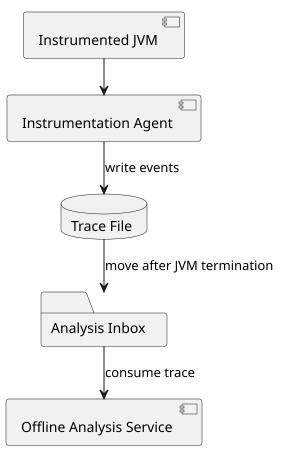
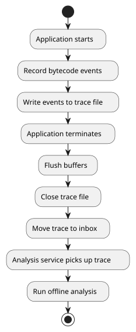
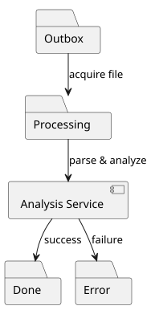
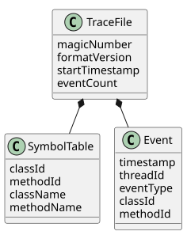
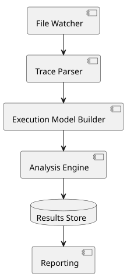

Navigation
../index | modules: parent | agent | collection | counter | example | interfaces | metrics-cost | metrics-cost-unnamed | test | thoughts on: JPMS | uninstrumentable | test tools | Metric Handoff
Context
The Java instrumentation agent records low-level bytecode execution events across the entire application stack, including significant portions of the JDK and third-party libraries.
Key characteristics:
-
Instrumentation is applied very broadly ("instrument everything").
-
Event volume during execution can potentially be very high.
-
The final analysis is only relevant after the instrumented JVM has terminated.
-
Trace files are expected to remain relatively small in practice.
-
Robustness and reproducibility are prioritized over real-time processing.
The goal is to transfer measurement results from the instrumentation agent to a separate analysis service.
Considered Options
Telemetry Platforms
Examples:
-
OpenTelemetry
-
Prometheus
-
Jaeger
-
Grafana ecosystem
These solutions are well suited for:
-
Metrics
-
Distributed tracing
-
Continuous monitoring
-
Real-time observability
However, they are not a natural fit for this use case because:
-
The instrumentation operates at bytecode-event granularity.
-
Event rates can be significantly higher than typical telemetry workloads.
-
Results are only needed after JVM termination.
-
Runtime communication introduces unnecessary complexity and potential failure modes.
Therefore, telemetry-based approaches are not pursued further.
Direct Runtime Communication
Possible implementations include:
-
HTTP/gRPC
-
Message queues
-
Kafka
Advantages:
-
Near real-time processing
-
Immediate availability of measurements
Disadvantages:
-
Additional runtime overhead
-
Backpressure concerns
-
More difficult failure handling
-
Potential recursion problems when instrumenting JDK networking components
Since post-execution analysis is sufficient, these approaches are not preferred.
Selected Architecture
The preferred design is an offline analysis model.

The instrumentation agent writes execution events to a local trace file.
After JVM termination:
-
Buffers are flushed.
-
The trace file is closed.
-
The trace file is atomically moved into an analysis inbox.
-
The analysis service discovers and processes the file.
No runtime network communication is required.
Trace Lifecycle

Trace Recording Strategy
Runtime Responsibilities
During application execution the agent should only:
-
Record events
-
Buffer data efficiently
-
Write to local storage
The agent should avoid:
-
Complex analysis
-
Network communication
-
Expensive serialization
-
Dependencies on heavily instrumented libraries
This minimizes runtime overhead and reduces the risk of instrumentation feedback loops.
Shutdown Responsibilities
A JVM shutdown hook should perform only minimal work:
-
Flush buffers
-
Close files
-
Move the completed trace into the inbox
The shutdown hook should not:
-
Execute analysis logic
-
Perform large uploads
-
Build reports
Keeping shutdown logic simple improves reliability.
Inbox Pattern
The analysis handoff follows a filesystem-based inbox pattern.

Typical flow:
-
Agent writes trace into
outbox. -
Analysis service atomically moves file to
processing. -
Analysis is executed.
-
File is moved to:
-
doneon success -
erroron failure
-
Benefits:
-
Crash resilience
-
Easy recovery
-
Simple operational model
-
Good observability
Trace Format
A lightweight binary format is recommended.

Header
The file should contain:
-
Magic Number
-
Format Version
-
Start Timestamp
-
Event Count
Event Record
Each event should contain:
-
Timestamp
-
Thread ID
-
Event Type
-
Class ID
-
Method ID
Symbol Table
Class names and method names should not be repeated in every event.
Instead, identifiers should be resolved through a symbol table embedded in the trace file.
Advantages:
-
Smaller files
-
Faster parsing
-
Lower memory consumption
Analysis Service

Responsibilities:
-
Watch the inbox directory
-
Parse trace files
-
Build an internal execution model
-
Execute analysis algorithms
-
Persist results
-
Generate reports
Potential future analyses include:
-
Call graph generation
-
Hotspot detection
-
Execution statistics
-
Dependency analysis
-
Architectural rule validation
Rationale
The offline-analysis architecture was selected because it provides:
-
Minimal runtime overhead
-
High robustness
-
Deterministic processing
-
Simple debugging
-
Easy replayability
-
Independence from network availability
-
Clean separation between recording and analysis
For a post-execution bytecode instrumentation system, this approach offers an effective balance between simplicity, reliability, and future extensibility.